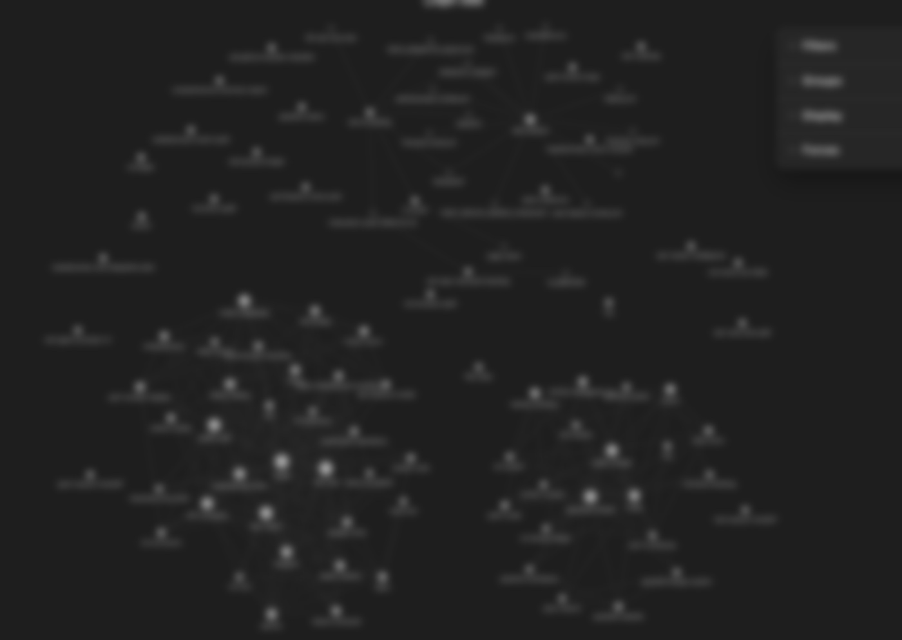
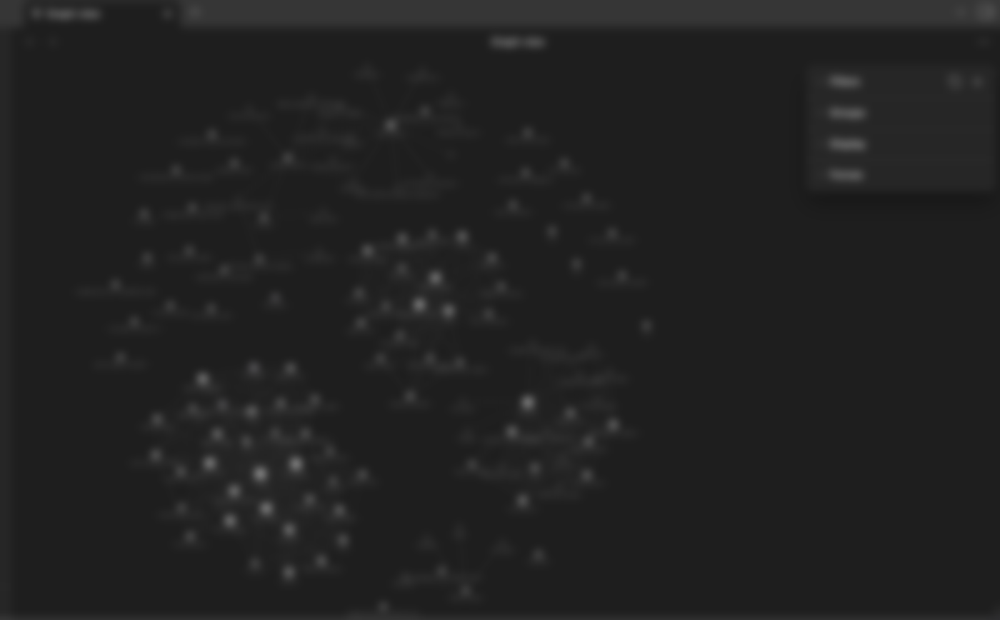

A compiled second brain. Database is canonical, the wiki is a regenerated view. Any AI client that speaks MCP can read and write to it. Built on Supabase + pgvector. No paid SaaS, no proprietary format.
Three persistent moving parts: a Supabase project, a Python compiler, a scheduled task. Everything else (which AI client you use, which folders you organize into, which import recipes you run) is your call.
The vault is just markdown. Open it with anything — VS Code, vim, Obsidian. Obsidian is free and ships with a graph view that turns the wiki into a force-directed network. Run it for a few weeks and the actual shape of how you think shows up.


What you don't see in a screenshot: the search. search_thoughts("the time I figured out how to fix the deploy") returns the right thought even if those exact words aren't in it, because it's matching on the embedding, not the text. That's where the brain stops being a wiki and starts being a memory.
| Component | Purpose | Where it lives |
|---|---|---|
| Supabase project | Stores thoughts table + pgvector embeddings | Hosted Supabase (free tier is plenty) |
open-brain-mcp Edge Function | HTTP MCP server. Implements capture_thought, search_thoughts, list_thoughts, thought_stats | Deployed inside your Supabase project |
wiki-compile.py | Reads thoughts via PostgREST, clusters by topic, writes one .md per topic to <vault>/<domain>/compiled/ | Local on your machine |
| Scheduled task | Runs the compiler nightly | macOS launchd, Linux systemd, or cron |
| Vault | The compiled markdown view, viewable in Obsidian/VS Code/whatever | Local folder, e.g. ~/open-brain/ |
| memory-sync (optional) | Pushes Claude Code's local memory files into Open Brain | Same machine, scheduled separately |
Single table, single index strategy. Run as a Supabase SQL migration:
create extension if not exists vector;
create table if not exists thoughts (
id uuid default gen_random_uuid() primary key,
content text not null,
embedding vector(1536),
metadata jsonb default '{}'::jsonb,
content_fingerprint text,
created_at timestamptz default now(),
updated_at timestamptz default now()
);
create index if not exists thoughts_embedding_idx
on thoughts using hnsw (embedding vector_cosine_ops);
create index if not exists thoughts_metadata_idx
on thoughts using gin (metadata);
create index if not exists thoughts_created_at_idx
on thoughts (created_at desc);
create unique index if not exists idx_thoughts_fingerprint
on thoughts (content_fingerprint) where content_fingerprint is not null;Full schema (including the search function, RLS policy, and the upsert_thought dedupe function) is in schema.sql.
embedding is 1536-dim (OpenAI text-embedding-3-small). metadata is JSONB — the MCP server fills in topics[], people[], type (observation / task / idea / reference / person_note), action_items[], folder (domain hint), and source automatically. content_fingerprint is SHA-256 of normalized content; the unique index gives you free dedupe via upsert.
Deno + Hono inside a Supabase Edge Function. Four tools, one HTTP endpoint. Required env vars:
| Variable | What |
|---|---|
SUPABASE_URL | Your project URL (auto-populated by Supabase) |
SUPABASE_SERVICE_ROLE_KEY | Auto-populated by Supabase |
OPENROUTER_API_KEY | For embeddings + metadata extraction. Free tier covers casual usage. Swap for local Ollama if you want zero third-party. |
MCP_ACCESS_KEY | Shared secret. Required on every HTTP call as the x-brain-key header. |
supabase functions deploy open-brain-mcp
supabase secrets set OPENROUTER_API_KEY=sk-... \
MCP_ACCESS_KEY=$(openssl rand -hex 32)curl -X POST https://<your-project>.supabase.co/functions/v1/open-brain-mcp \
-H "x-brain-key: $MCP_ACCESS_KEY" \
-H "Accept: application/json, text/event-stream" \
-H "Content-Type: application/json" \
-d '{"jsonrpc":"2.0","id":1,"method":"tools/call","params":{"name":"capture_thought","arguments":{"content":"hello brain"}}}'wiki-compile.py is one file, no external deps beyond requests. It:
/rest/v1/thoughts?select=...&order=created_at.desc)metadata.folder, then by topic keywords, then by content scan, then defaults to DEFAULT_DOMAIN<vault>/<domain>/compiled/<topic>.md per primary topic, with frontmatter (title, domain, compiled_at, thought_count) and thoughts in reverse-chronological order<vault>/<domain>/compiled-index.md<vault>/meta/dream-logs/YYYY-MM-DD.mdRun it once by hand to verify:
SUPABASE_URL=https://<your-project>.supabase.co python3 wiki-compile.pyThe compiler reads its Supabase secret from ~/.open-brain-supabase-secret (a single line: your service-role key). Keep it chmod 600.
The flavor that's least magic — pure cron:
0 5 * * * cd ~/open-brain && /usr/bin/python3 meta/wiki-compile.py >> meta/dream-logs/cron.log 2>&1Or on macOS via launchd, or on Linux via systemd. Templates for all three are in scheduling/.
Add the MCP entry to ~/.claude.json (or run claude mcp add if you prefer the wizard):
{
"mcpServers": {
"open-brain": {
"type": "http",
"url": "https://<your-project>.supabase.co/functions/v1/open-brain-mcp",
"headers": { "x-brain-key": "<your MCP_ACCESS_KEY>" }
}
}
}Restart Claude Code. The four tools become callable from any session.
Settings → Connectors → Add custom connector → paste the same URL plus the x-brain-key header. The tools show up in the assistant UI.
In any Claude session:
<a>, <b>, <c>.
The AI calls capture_thought for you. Verify in Supabase Studio:
SELECT id, content, metadata FROM thoughts ORDER BY created_at DESC LIMIT 5;The new row should be there with metadata auto-populated (topics, type, action_items). Run the compiler. The thought should appear in the appropriate <domain>/compiled/<topic>.md.
Three domains is the default shape. Pick yours up front; the compiler routes by keyword match. Examples:
work, side-projects, personal (default)team, oncall, personalresearch, writing, lifeTo change the routing keyword lists, edit the DOMAIN_KEYWORDS block at the top of wiki-compile.py. That's the only opinionated part — everything else is just data.
The full setup, tonight, in order. Budget ~45 min.
supabase functions deploy open-brain-mcpOPENROUTER_API_KEY, MCP_ACCESS_KEYcurl in §04.~/open-brain/ with meta/wiki-compile.py and your <domain>/compiled/ folders.~/.open-brain-supabase-secret (chmod 600).